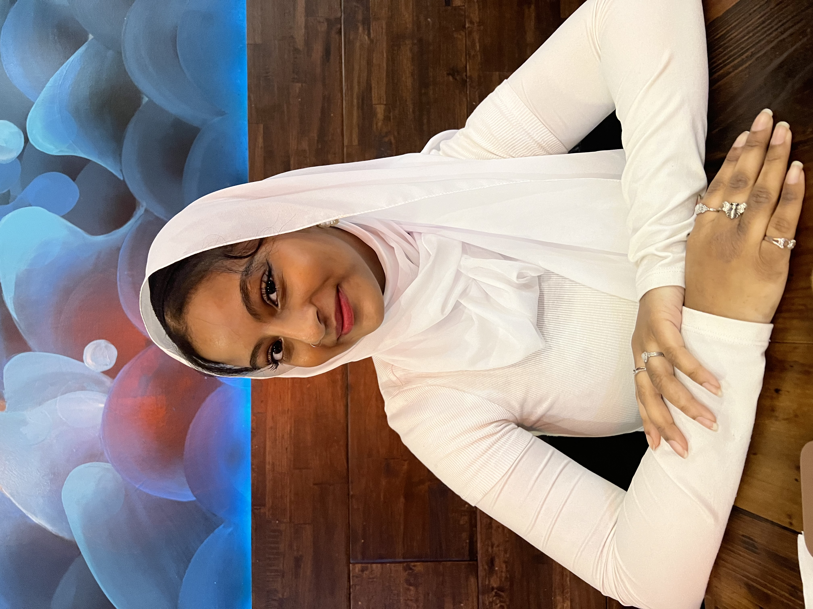

Welcome to my website :D!
Hello! I'm Esraa, a 4th year student at Boston University studying Computer Science and Biology. I grew up in West Haven, CT, and moved to Boston for college. I'm passionate about health equity and social justice, and I love coding, especially when it involves finding creative solutions to real-world problems. Outside of class, I enjoy reading, listening to music, and going to the gym. Welcome to my website!